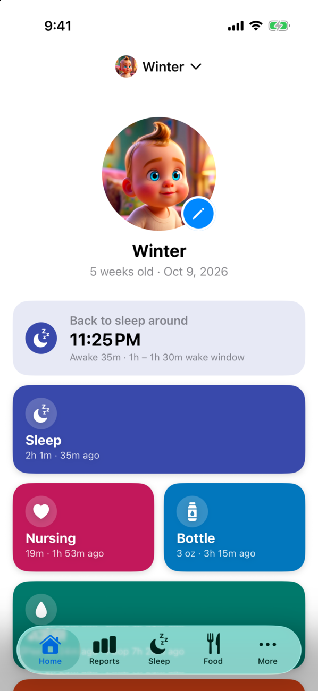
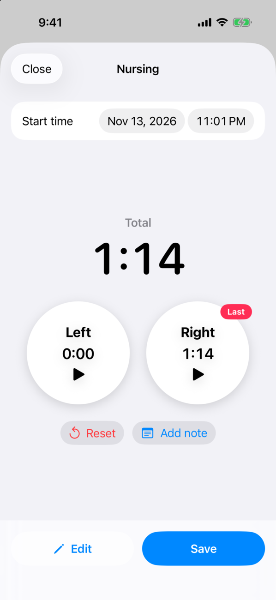
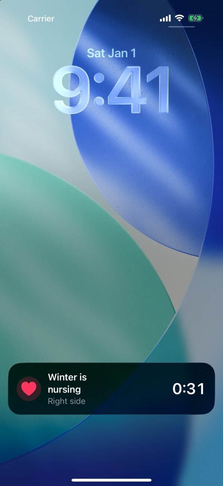
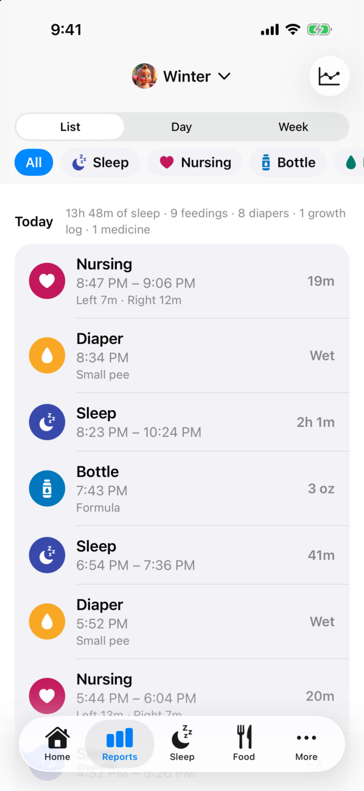
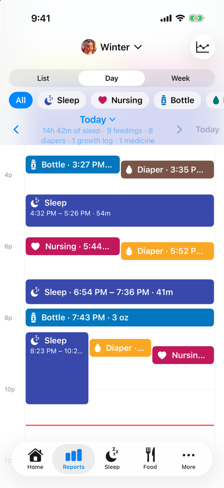
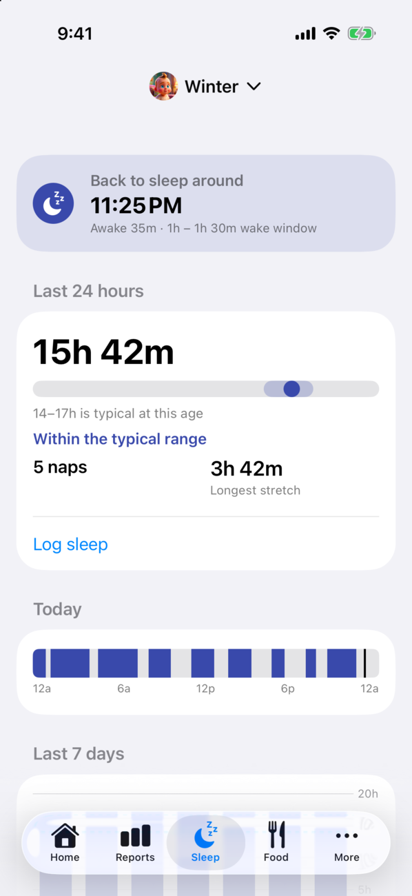
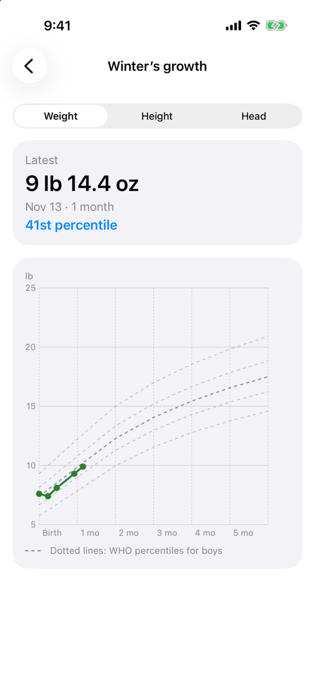
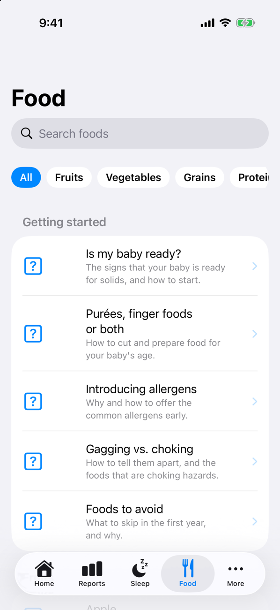

The baby tracker for the whole family
Totly keeps track of your little one's day — sleep, nursing, bottles, diapers, growth and medicine — and shares it with everyone who helps care for them. Log anything in a couple of taps, see the day at a glance, and know when the next nap is coming.

Log anything in a tap
Home shows a tile for each activity with what you logged last and how long ago, so "when did she last eat?" is answered before you ask it.
- Sleep and nursing timers — start a timer and put your phone down. Nursing has a timer for each side and remembers which side you finished on. Forgot to start it? Enter the times by hand instead.
- Bottles — breast milk, formula or other, in oz or ml.
- Diapers — wet, poop, mixed or dry, with amounts, poop color and consistency, and diaper rash.
- Growth and medicine — weight, height and head circumference, and doses of the medicines you add.
- Notes on any entry, and a Customize sheet to reorder, show or hide tiles — including contractions, for before the baby arrives.

Timers you can see from anywhere
Running sleep and nursing timers show on the iPhone Lock Screen and Dynamic Island as Live Activities, and as ongoing notifications on Android — tap one to jump straight back to the timer. A Last Activity home screen widget and an Apple Watch app let you check in or log without opening the app.

See the whole day — or the whole week
The Reports tab shows every entry as a list with a daily summary, or as a day or week timeline you can pinch to zoom. Filter by activity to spot patterns in sleep or feedings, swipe an entry away to delete it (with undo), or tap it to edit.


Know when the next nap is coming
From when your baby last woke up and the wake windows typical for their age, Totly suggests when to put them down for their next nap or bedtime, right on the Home screen. The Sleep tab adds insights into the last 24 hours against the typical range, today's sleep at a glance, a 7-day day/night breakdown, and guides for each age and for topics like safe sleep.

Growth charts with WHO percentiles
Chart weight, height and head circumference against the WHO Child Growth Standards' 5th–95th percentiles from birth to 24 months, and see which percentile the latest measurement falls on. Enter measurements in lb and oz or kg, and inches or cm.

A guide to starting solids
The Food tab walks you through starting solids — the signs your baby is ready, purées and finger foods, introducing allergens, gagging vs. choking, and foods to avoid. Search the food library to see when each food can be offered, its allergens and choking risk, and how to serve it at every age.

Share with your family
Invite a partner, grandparent or nanny by email and everyone sees the same babies and logs on their own phone. Changes sync in real time, so a timer started on one phone shows up on the other right away. Totly also works fully offline without an account — sign up only when you want to back up your logs or share them.
Contact
Have questions or feedback? Reach out to us at support@plusmobileapps.com.